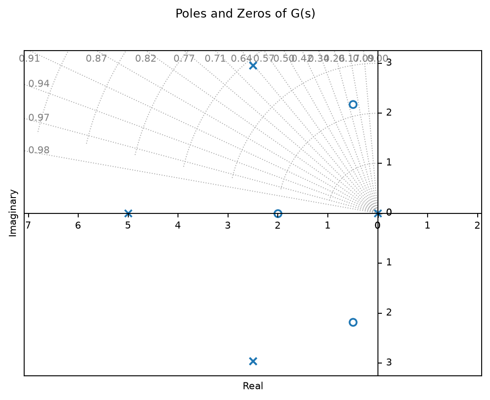
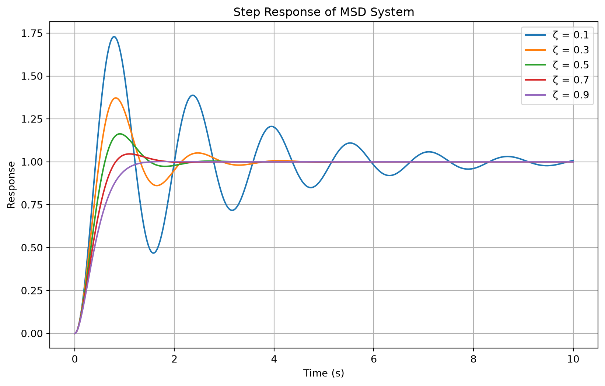
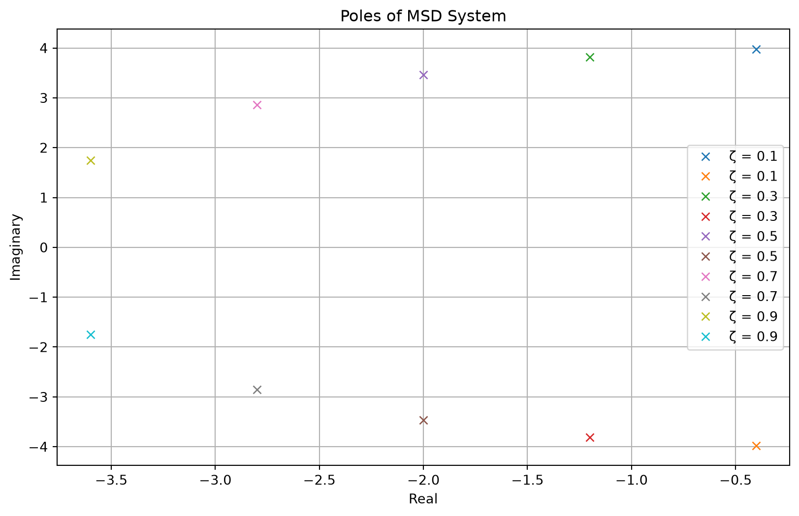

For “single-input, single-output” systems, PID is often sufficient
PID has been around a long time and is well understood
PID is relatively easy to tune with decent performance for linear systems
Classical Control is done in the “s-domain” (or frequency or Laplace Domain)
However, PID is not the best choice for non-linear, time-varying, or multi-input, multi-output, or complex systems
3.1.2 Learning Outcomes
Review the Laplace domain and its use in control systems
Relate solutions of linear ODEs to concepts like, stabilty and peroformance
Look into the concepts of propotional, integral, and derivative control
3.2 Slide 3 - Functions of a Complex Variable
Let \(s=a+jb\) be a complex number with \(j=\sqrt{-1}\). Notice we typically use \(j\) in controls since the Electrical Engineers took \(i\) for current.
where \(z_i\) are the zeros of \(G(s)\) and \(p_i\) are the poles of \(G(s)\).
Notice that the poles and zeros are complex numbers, and that the poles are the roots of the denominator polynomial \(D(s)\) and the zeros are the roots of the numerator polynomial \(N(s)\).
In set from \({z_i}\) = {s | N(s) = 0} and \({p_i}\) = {s | D(s) = 0}. The order of \(G(s)\) is the number of poles, \(n\).
3.3 Slide 4 - Poles and Zeros Examples
\[G(s) = \frac{(s+2)(s+10)}{s(s+5)(s+15)^2}\]
Therefore,
\[z = \left\{ -2, -10 \right\}\]
\[p = \{0, -5, -15, -15\}\]
Another more complex example is:
\[ G(s) = \frac{(s + 2)(s^2 + s + 5)}{s (s + 5)(s^2 + 5s + 15)}\]
Code
import numpy as npimport matplotlib.pyplot as pltimport control as ct# Define the transfer function: G(s) = (s+2)(s^2+s+5) / (s(s+5)(s^2+5s+15))num = np.polymul([1, 2], [1, 1, 5])den = np.polymul([1, 0], np.polymul([1, 5], np.polymul([1, 5, 15], [1, 5, 15])))G = ct.TransferFunction(num, den)# Plot the poles and zerosplt.figure()ct.pole_zero_plot(G, title='Poles and Zeros of G(s)', grid=True)plt.show()

3.4 Slide 5 - The Laplace Transform
The Laplace transform converts a time-domain signal into the complex frequency domain. For a causal function \(f(t)\) (defined for \(t\ge0\)) the unilateral Laplace transform is
Initial value theorem: \(f(0^+)=\lim_{s\to\infty} sF(s)\).
Final value theorem: \(\lim_{t\to\infty} f(t)=\lim_{s\to0} sF(s)\), when the limits exist (i.e., poles of \(sF(s)\) are in the left half-plane).
Quick example: \(f(t)=e^{2t}u(t)\) has transform \(F(s)=1/(s-2)\) for \(\mathrm{Re}(s)>2\).
The Laplace transform is fundamental in linear systems analysis because it turns linear differential equations into algebraic equations in \(s\), simplifying solution and control-design tasks.
3.7 Slide 8 - Why Laplace?
One way to think about the Laplace transform is that it is a generalization of the Fourier transform. The Fourier transform is a special case of the Laplace transform where \(s=j\omega\) and \(\sigma=0\). The Laplace transform allows us to analyze systems with exponential growth or decay, which is common in control systems.
The Laplace Transform is helpful because it transforms differential equations into algebraic equations, making it easier to analyze and design control systems.
If we can solve the algebraic equations in the Laplace domain, we can then use the inverse Laplace transform to find the solution in the time domain.
3.7.1 Example - Mass-Spring-Damper System (MSD)
Figure of MSD
The equation of motion for a mass-spring-damper system is given by:
\[ m\ddot{x}(t) + c\dot{x}(t) + kx(t) = F(t)\]
Let \(\omega_n^2 = {k/m}\) where \(\omega_n\) is the natural frequency, and \(\frac{c}{m} = 2\zeta\omega_n\), so \(\zeta = \frac{c}{2\sqrt{mk}}\) is the damping ratio, and \(F=k u(t)\) is the force required to displace the mass some distance, \(u(t)\) acoring to Hook’s law. Finally, divide both sides by \(m\) to get:
Now, define the state vector as \(\underline{x}(t) = \begin{bmatrix} x(t) \\ \dot{x}(t) \end{bmatrix}\), and we can write the system in state-space form as:
\[ \dot{\underline{x}}(t) = A\underline{x}(t) + B \underline{u}(t) \]
This is known as the state-space representation or state equation of the system, where \(A\) is the system matrix and \(B\) is the input matrix.
where \(A = \begin{bmatrix} 0 & 1 \\ -\omega_n^2 & -2\zeta\omega_n \end{bmatrix}\) and \(B = \begin{bmatrix} 0 \\ \omega_n^2 \end{bmatrix}\).
Assuming we measure the position of the mass, we can define the output as \[y(t) = C\underline{x}(t)\]
where \(C = \begin{bmatrix} 1 & 0 \end{bmatrix}\). This is know as the output or measurement equation of the system.
In control theory, we can generally let the output be a function of the input, i.e., \(\underline{y}(t) = C\underline{x}(t) + D\underline{u}(t)\), where \(D\) is a feed through term. In this case, we have no feed through, so \(D=0\).
Now, we can take the Laplace transform of the state-space equations to get:
where \(\underline{X}(s)\) is the Laplace transform of the state vector \(\underline{x}(t)\), and \(\underline{U}(s)\) is the Laplace transform of the input vector \(\underline{u}(t)\).
Assuming \(\underline{x}(0) = 0\), we can solve for \(\underline{X}(s)\):
3.8 Slide 9 - Another look at the Transfer Function
The transfer function is,
\[ G(s) = \frac{N(s)}{D(s)}\]
Recall that for any matrix \(P\), the inverse of \(P\) is given by,
\[ P^{-1} = \frac{adj(P)}{det(P)}\]
where \(adj(P)\) is the adjugate of \(P\) and \(det(P)\) is the determinant of \(P\).
The adjugate of a matrix is the conjugate transpose of the cofactor matrix.
This is the least efficient way to compute the inverse of a matrix, but it is useful for theoretical analysis.
Notice the adugate is a matrix of polynomials in \(s\), and is \(n \times n\) where \(n\) is the order of the system. The determinant is a polynomial in \(s\) of order \(n\). Therefore, we can write,
For the MSD system the output matrix is \(C\) is \(1 \times 2\) and the input matrix is \(B\) is \(2 \times 1\). Therefore the denominator the transfer function is a scalar polynomial.
And it is always true that \(det(sI - A) = D(s)\), the denominator of the transfer function. The numerator is a polynomial in \(s\) of order \(n-1\).
What is interesting here is that,
\[ det(sI-A) = D(s) = \Pi_{i=1}^{n} (s-p_i) = 0\]
where \(p_i\) are the poles of the transfer function. Therefore, the poles of the transfer function are the eigenvalues of the system matrix \(A\).
\[\{Eigenvalues \ of \ A\} = \{ Poles \ of the \ transfer \ function \ G(s) \}\]
3.9 Slide 10 - Step Response
The step response of a system is the output of the system when the input is a unit step function. The unit step function is defined as:
\[ u_s(t) = \begin{cases} 0, & t < 0 \\ 1, & t \geq 0 \end{cases} \]
draw the step function
The Laplace transform of the unit step function is:
\[ \mathcal{L}\{u_s(t)\} = \frac{1}{s} \]
Therefore, the step response of a system with transfer function \(G(s)\) is given by:
where \(\omega_d = \omega_n\sqrt{1-\zeta^2}\) is the damped natural frequency and \(\phi = \arccos(\zeta)\) is the phase angle.
We can plot the plot the step response for \(\zeta = 0.1, 0.3, 0.5, 0.7, 0.9\) and \(\omega_n = 4\) rad/s.
Code
import numpy as npimport scipy.signal as signalimport matplotlib.pyplot as plt# System parameterszeta = [0.1, 0.3, 0.5, 0.7, 0.9]wn =4# Create a figureplt.figure(figsize=(10, 6))t = np.linspace(0, 10, 1000)for i, z inenumerate(zeta):# Transfer function coefficients num = [wn**2] den = [1, 2*z*wn, wn**2] sys = signal.TransferFunction(num, den)# Compute step response over our defined timeline t_out, y = signal.step(sys, T=t)# Plot step response plt.plot(t_out, y, label=f'ζ = {z}')plt.xlabel('Time (s)')plt.ylabel('Response')plt.title('Step Response of MSD System')plt.legend()plt.grid(True)plt.show()

In the case of the MSD system, we can find the poles of the transfer function by finding the roots of the characteristic polynomial \(D(s) = s^2 + 2\zeta\omega_n s + \omega_n^2\). The poles are given by:
where \(\omega_d = \omega_n\sqrt{1-\zeta^2}\) is the damped natural frequency.
Finally, we can plot the poles of the MSD system for different values of \(\zeta\).
Code
import numpy as npimport matplotlib.pyplot as pltzeta = [0.1, 0.3, 0.5, 0.7, 0.9]wn =4# Create a figureplt.figure(figsize=(10, 6))for z in zeta:# Calculate poles p1 =-z*wn +1j*wn*np.sqrt(1-z**2) p2 =-z*wn -1j*wn*np.sqrt(1-z**2) plt.plot(np.real(p1), np.imag(p1), 'x', label=f'ζ = {z}') plt.plot(np.real(p2), np.imag(p2), 'x', label=f'ζ = {z}')plt.xlabel('Real')plt.ylabel('Imaginary')plt.title('Poles of MSD System')plt.legend()plt.grid(True)plt.show()

If we plot the transfer function as a function of a single parameter, we can see how the poles move in the complex plane as we change the damping ratio \(\zeta\). This is known as a root locus plot. We can plot the root locus for any single variable.
What happens if the damping ratio is greater than 1? Or negative?
3.10 Slide 11 - Performance of the MSD Step Response
Plot the step response and call out the different performance metrics, such as rise time, settling time, overshoot, and steady-state error. Discuss how these metrics are affected by the damping ratio \(\zeta\) and natural frequency \(\omega_n\).
Add a figure showing the step response with annotations for rise time, settling time, overshoot, and steady-state error.
3.11 Slide 12 - Performance Metrics
Performance:
Quantity
Formula
Rise Time
\(t_r=\frac{\pi-\beta}{\omega_d}\)
Peak Time
\(t_p=\frac{\pi}{\omega_d}\)
Overshoot
\(M_p=e^{-\pi\zeta/\sqrt{1-\zeta^2}}\)
Settling Time
\(t_s\approx\frac{4}{\zeta\omega_n}\)
Key point: \(\zeta\) and \(\omega_n\) tell us about performance and stability of the sytem.
If we can use feedback to effectively change the poles of the system, we can improve performance and stability.
3.12 Slide 13 - Performance and Stability with Feedback
3.12.1 Proportional Control
Draw a block diagram of a feedback control system with a plant \(G(s)\) and a controller \(C(s)\). With \(C(s) = k_p\). Show how the closed-loop transfer function is given by:
\[Y(s) = G(s)U(s)\]
Point out the idea of convolution and the inverse Lapalce Transform.
\[U(s) = C(s)E(s)\]
\[E(s) = U_r(s) - Y(s)\]
Therefore, we can write the closed-loop transfer function as:
\[Y(s) = G(s)C(s)E(s) = G(s)C(s)(U_r(s) - Y(s))\]
Solving for \(Y(s)\), we get:
\[Y(s) = \frac{G(s)C(s)}{1 + G(s)C(s)}U_r(s)\]
Draw closed loop block diagram from \(U_r(s)\) to \(Y(s)\).
Now substitute \(C(s) = k_p\) and \(G(s) = \frac{\omega_n^2}{s^2 + 2\zeta\omega_n s + \omega_n^2}\) to get:
\[Y(s) = \frac{k_p\omega_n^2}{s^2 + 2\zeta\omega_n s + (1+k_p)\omega_n^2}U_r(s)\]
Notice the poles and Eigenvalues of the closed-loop system are a function of the proportional gain \(k_p\). Therefore, we can use feedback to change the poles of the system and improve performance and stability.
3.13 Slide 14 - Proportional Feedback
Let \(\overline{\omega}_n^2 = (1+k_p)\omega_n^2\) and \(\overline{\zeta} = \frac{\zeta}{\sqrt{1+k_p}}\). Then we can write the closed-loop transfer function as:
\[G_c(s) = \frac{k_p\omega_n^2}{s^2 + 2\overline{\zeta}\overline{\omega}_n s + \overline{\omega}_n^2}\]
Let \(\overline{\omega}_n^2 = (1+k_p)\omega_n^2\) and \(\overline{\zeta} = \frac{2\zeta\omega_n + k_d\omega_n^2}{2\overline{\omega}_n}\), then we can write the closed-loop transfer function as:
So we can modify the closed-loop damping ratio and natural frequency by changing the proportional and derivative gains, \(k_p\) and \(k_d\). We are also moving the poles around.
Notice we also added a zero which changes the transient response of the system. The zero is located at \(s = -k_p/k_d\).
Finally, applying the final value theorem, we can see that the steady-state error is still non-zero:
There are many ways to tune a PID controller, but one of the most common methods is the Ziegler-Nichols method. This method involves finding the ultimate gain and ultimate period of the system, and then using these values to calculate the PID gains.
We can also use the root locus method to tune a PID controller. This method involves plotting the root locus of the system and then selecting the desired closed-loop poles based on the desired performance specifications.
Or we can use frequency response methods, such as Bode plots or Nyquist plots, to tune a PID controller. These methods involve analyzing the frequency response of the system and then selecting the PID gains based on the desired performance specifications.
Or we can use optimization methods, such as genetic algorithms or particle swarm optimization, to tune a PID controller. These methods involve defining a cost function based on the desired performance specifications and then using an optimization algorithm to find the PID gains that minimize the cost function.
Source Code
---title: "Classical Control Highlights"format: html: theme: cosmo toc: true toc-depth: 2 code-fold: true code-tools: truejupyter: python3---## Slide 2 - Motivation and Learning Outcomes### Motivation- Proportional, Integral, Derivative Control- For “single-input, single-output” systems, PID is often sufficient- PID has been around a long time and is well understood- PID is relatively easy to tune with decent performance for linear systems- Classical Control is done in the “s-domain” (or frequency or Laplace Domain)- However, PID is not the best choice for non-linear, time-varying, or multi-input, multi-output, or complex systems### Learning Outcomes- Review the Laplace domain and its use in control systems- Relate solutions of linear ODEs to concepts like, stabilty and peroformance- Look into the concepts of propotional, integral, and derivative control## Slide 3 - Functions of a Complex VariableLet $s=a+jb$ be a complex number with $j=\sqrt{-1}$. Notice we typically use $j$ in controls since the Electrical Engineers took $i$ for current.We define the *rational polynomial* $G(s)$ as:$$G(s) = \frac{a_0s^m+ a_1s^{m-1} + \cdots + a_m}{s^n+b_1s^{n-1}+ \cdots + b_n}$$ $$= \frac{N(s)}{D(s)}, \ for \ a_i, \ b_i \in \mathbb{R}$$When $m<n$, we say that $G(s)$ is *strictly proper*. When $m=n$, we say that $G(s)$ is *proper*. When $m>n$, we say that $G(s)$ is *improper*.If we factor $G(s)$ into its roots, we can write:\$$G(s) = K\frac{(s-z_1)(s-z_2)\cdots(s-z_m)}{(s-p_1)(s-p_2)\cdots(s-p_n)}$where $z_i$ are the *zeros* of $G(s)$ and $p_i$ are the *poles* of $G(s)$.Notice that the poles and zeros are complex numbers, and that the poles are the roots of the denominator polynomial $D(s)$ and the zeros are the roots of the numerator polynomial $N(s)$.In set from ${z_i}$ = {s \| N(s) = 0} and ${p_i}$ = {s \| D(s) = 0}. The *order* of $G(s)$ is the number of poles, $n$.## Slide 4 - Poles and Zeros Examples$$G(s) = \frac{(s+2)(s+10)}{s(s+5)(s+15)^2}$$Therefore,$$z = \left\{ -2, -10 \right\}$$$$p = \{0, -5, -15, -15\}$$Another more complex example is:$$ G(s) = \frac{(s + 2)(s^2 + s + 5)}{s (s + 5)(s^2 + 5s + 15)}$$```{python}import numpy as npimport matplotlib.pyplot as pltimport control as ct# Define the transfer function: G(s) = (s+2)(s^2+s+5) / (s(s+5)(s^2+5s+15))num = np.polymul([1, 2], [1, 1, 5])den = np.polymul([1, 0], np.polymul([1, 5], np.polymul([1, 5, 15], [1, 5, 15])))G = ct.TransferFunction(num, den)# Plot the poles and zerosplt.figure()ct.pole_zero_plot(G, title='Poles and Zeros of G(s)', grid=True)plt.show()```## Slide 5 - The Laplace TransformThe Laplace transform converts a time-domain signal into the complex frequency domain. For a causal function $f(t)$ (defined for $t\ge0$) the unilateral Laplace transform is$$F(s)=\mathcal{L}\{f(t)\}=\int_{0}^{\infty} e^{-st}f(t)\,dt$$,where $s=\sigma+j\omega$ is a complex variable and the integral converges in the region of convergence (ROC).Drawing of mapping from time domain to s-domain and back.## Slide 6 - Properties of the Laplace TransformKey properties:- Linearity: $\mathcal{L}\{a f(t)+b g(t)\}=aF(s)+bG(s)$.- Time shift: $\mathcal{L}\{f(t-a)u(t-a)\}=e^{-as}F(s)$.- Frequency shift: $\mathcal{L}\{e^{at}f(t)\}=F(s-a)$.- Differentiation (time): $\mathcal{L}\{f'(t)\}=sF(s)-f(0^+)$.- Differentiation (time, higher order): $\mathcal{L}\{f^{(n)}(t)\}=s^nF(s)-s^{n-1}f(0^+)-\cdots-f^{(n-1)}(0^+)$.- Integration (time): $\mathcal{L}\{\int_0^t f(\tau)\,d\tau\}=\frac{1}{s}F(s)$.- Integration (time, higher order): $\mathcal{L}\{\int_0^t \int_0^{\tau_1} \cdots \int_0^{\tau_{n-1}} f(\tau_n)\,d\tau_n \cdots d\tau_2 d\tau_1\}=\frac{1}{s^n}F(s)$.Common transforms (causal signals):- $\mathcal{L}\{1\}=\dfrac{1}{s}$- $\mathcal{L}\{t\}=\dfrac{1}{s^{2}}$- $\mathcal{L}\{e^{at}\}=\dfrac{1}{s-a}$- $\mathcal{L}\{\sin(\omega t)\}=\dfrac{\omega}{s^{2}+\omega^{2}}$- $\mathcal{L}\{\cos(\omega t)\}=\dfrac{s}{s^{2}+\omega^{2}}$## Slide 7 - Useful TheoremsUseful theorems:- Initial value theorem: $f(0^+)=\lim_{s\to\infty} sF(s)$.- Final value theorem: $\lim_{t\to\infty} f(t)=\lim_{s\to0} sF(s)$, when the limits exist (i.e., poles of $sF(s)$ are in the left half-plane).Quick example: $f(t)=e^{2t}u(t)$ has transform $F(s)=1/(s-2)$ for $\mathrm{Re}(s)>2$.The Laplace transform is fundamental in linear systems analysis because it turns linear differential equations into algebraic equations in $s$, simplifying solution and control-design tasks.## Slide 8 - Why Laplace?One way to think about the Laplace transform is that it is a generalization of the Fourier transform. The Fourier transform is a special case of the Laplace transform where $s=j\omega$ and $\sigma=0$. The Laplace transform allows us to analyze systems with exponential growth or decay, which is common in control systems.The Laplace Transform is helpful because it transforms differential equations into algebraic equations, making it easier to analyze and design control systems.If we can solve the algebraic equations in the Laplace domain, we can then use the inverse Laplace transform to find the solution in the time domain.### Example - Mass-Spring-Damper System (MSD)Figure of MSDThe equation of motion for a mass-spring-damper system is given by:$$ m\ddot{x}(t) + c\dot{x}(t) + kx(t) = F(t)$$Let $\omega_n^2 = {k/m}$ where $\omega_n$ is the natural frequency, and $\frac{c}{m} = 2\zeta\omega_n$, so $\zeta = \frac{c}{2\sqrt{mk}}$ is the damping ratio, and $F=k u(t)$ is the force required to displace the mass some distance, $u(t)$ acoring to Hook's law. Finally, divide both sides by $m$ to get:$$ \ddot{x}(t) + 2\zeta\omega_n \dot{x}(t) + \omega_n^2 x(t) = \omega_n^2 u(t) $$Now, define the state vector as $\underline{x}(t) = \begin{bmatrix} x(t) \\ \dot{x}(t) \end{bmatrix}$, and we can write the system in state-space form as:$$ \dot{\underline{x}}(t) = \begin{bmatrix} 0 & 1 \\ -\omega_n^2 & -2\zeta\omega_n \end{bmatrix} \underline{x}(t) + \begin{bmatrix} 0 \\ \omega_n^2 \end{bmatrix} \underline{u}(t) $$In more compact form, we can write this as:$$ \dot{\underline{x}}(t) = A\underline{x}(t) + B \underline{u}(t) $$This is known as the state-space representation or state equation of the system, where $A$ is the system matrix and $B$ is the input matrix.where $A = \begin{bmatrix} 0 & 1 \\ -\omega_n^2 & -2\zeta\omega_n \end{bmatrix}$ and $B = \begin{bmatrix} 0 \\ \omega_n^2 \end{bmatrix}$.Assuming we measure the position of the mass, we can define the output as $$y(t) = C\underline{x}(t)$$where $C = \begin{bmatrix} 1 & 0 \end{bmatrix}$. This is know as the *output* or measurement equation of the system.In control theory, we can generally let the output be a function of the input, i.e., $\underline{y}(t) = C\underline{x}(t) + D\underline{u}(t)$, where $D$ is a *feed through* term. In this case, we have no *feed through*, so $D=0$.Now, we can take the Laplace transform of the state-space equations to get:$$\mathcal{L}\{\dot{\underline{x}}(t)\} = \mathcal{L}\{A\underline{x}(t) + B\underline{u}(t)\}$$$$ s\underline{X}(s) - \underline{x}(0) = A\underline{X}(s) + B\underline{U}(s) $$where $\underline{X}(s)$ is the Laplace transform of the state vector $\underline{x}(t)$, and $\underline{U}(s)$ is the Laplace transform of the input vector $\underline{u}(t)$.Assuming $\underline{x}(0) = 0$, we can solve for $\underline{X}(s)$:$$ \underline{X}(s) = (sI - A)^{-1}B\underline{U}(s) $$Finally, we can find the output in the Laplace domain: $$ \underline{Y}(s) = C\underline{X}(s) = C(sI - A)^{-1}B\underline{U}(s) $$We define the *transfer function* of the system $G(s)$ as the ratio of the output to the input in the Laplace domain:$$ G(s) = \frac{\underline{Y}(s)}{\underline{U}(s)} = C(sI - A)^{-1}B $$From before we notice,$$ G(s) = \frac{N(s)}{D(s)}$$Therefore,$$ Y(s) = G(s)U(s) = C(sI - A)^{-1}BU(s) = \frac{N(s)}{D(s)}$$## Slide 9 - Another look at the Transfer FunctionThe transfer function is,$$ G(s) = \frac{N(s)}{D(s)}$$Recall that for any matrix $P$, the inverse of $P$ is given by,$$ P^{-1} = \frac{adj(P)}{det(P)}$$where $adj(P)$ is the adjugate of $P$ and $det(P)$ is the determinant of $P$.The adjugate of a matrix is the conjugate transpose of the cofactor matrix.This is the least efficient way to compute the inverse of a matrix, but it is useful for theoretical analysis.Notice the adugate is a matrix of polynomials in $s$, and is $n \times n$ where $n$ is the order of the system. The determinant is a polynomial in $s$ of order $n$. Therefore, we can write,$$ (sI - A)^{-1} = \frac{adj(sI - A)}{det(sI - A)}$$For the MSD system the output matrix is $C$ is $1 \times 2$ and the input matrix is $B$ is $2 \times 1$. Therefore the denominator the transfer function is a scalar polynomial.And it is always true that $det(sI - A) = D(s)$, the denominator of the transfer function. The numerator is a polynomial in $s$ of order $n-1$.What is interesting here is that,$$ det(sI-A) = D(s) = \Pi_{i=1}^{n} (s-p_i) = 0$$where $p_i$ are the poles of the transfer function. Therefore, the poles of the transfer function are the eigenvalues of the system matrix $A$.$$\{Eigenvalues \ of \ A\} = \{ Poles \ of the \ transfer \ function \ G(s) \}$$## Slide 10 - Step ResponseThe step response of a system is the output of the system when the input is a unit step function. The unit step function is defined as:$$ u_s(t) = \begin{cases} 0, & t < 0 \\ 1, & t \geq 0 \end{cases} $$draw the step functionThe Laplace transform of the unit step function is:$$ \mathcal{L}\{u_s(t)\} = \frac{1}{s} $$Therefore, the step response of a system with transfer function $G(s)$ is given by:$$ Y(s) = G(s)U(s) = G(s)\frac{1}{s} $$For the MSD system, we have:$$ Y(s) = \frac{\omega_n^2}{s^2 + 2\zeta\omega_n s + \omega_n^2} \frac{1}{s} $$From a variety of sources, we can find the inverse Laplace transform of this expression to get the step response in the time domain.The step response of the MSD system is given by:$$ y(t) = 1 - \frac{1}{\sqrt{1-\zeta^2}} e^{-\zeta\omega_n t} \sin(\omega_d t + \phi) $$where $\omega_d = \omega_n\sqrt{1-\zeta^2}$ is the damped natural frequency and $\phi = \arccos(\zeta)$ is the phase angle.We can plot the plot the step response for $\zeta = 0.1, 0.3, 0.5, 0.7, 0.9$ and $\omega_n = 4$ rad/s.```{python}import numpy as npimport scipy.signal as signalimport matplotlib.pyplot as plt# System parameterszeta = [0.1, 0.3, 0.5, 0.7, 0.9]wn =4# Create a figureplt.figure(figsize=(10, 6))t = np.linspace(0, 10, 1000)for i, z inenumerate(zeta):# Transfer function coefficients num = [wn**2] den = [1, 2*z*wn, wn**2] sys = signal.TransferFunction(num, den)# Compute step response over our defined timeline t_out, y = signal.step(sys, T=t)# Plot step response plt.plot(t_out, y, label=f'ζ = {z}')plt.xlabel('Time (s)')plt.ylabel('Response')plt.title('Step Response of MSD System')plt.legend()plt.grid(True)plt.show()```In the case of the MSD system, we can find the poles of the transfer function by finding the roots of the characteristic polynomial $D(s) = s^2 + 2\zeta\omega_n s + \omega_n^2$. The poles are given by:$$ p_{1,2} = -\zeta\omega_n \pm j\omega_n\sqrt{1-\zeta^2} $$or,$$ p_{1,2} = -\zeta\omega_n \pm j\omega_d $$where $\omega_d = \omega_n\sqrt{1-\zeta^2}$ is the damped natural frequency.Finally, we can plot the poles of the MSD system for different values of $\zeta$.```{python}import numpy as npimport matplotlib.pyplot as pltzeta = [0.1, 0.3, 0.5, 0.7, 0.9]wn =4# Create a figureplt.figure(figsize=(10, 6))for z in zeta:# Calculate poles p1 =-z*wn +1j*wn*np.sqrt(1-z**2) p2 =-z*wn -1j*wn*np.sqrt(1-z**2) plt.plot(np.real(p1), np.imag(p1), 'x', label=f'ζ = {z}') plt.plot(np.real(p2), np.imag(p2), 'x', label=f'ζ = {z}')plt.xlabel('Real')plt.ylabel('Imaginary')plt.title('Poles of MSD System')plt.legend()plt.grid(True)plt.show()```If we plot the transfer function as a function of a single parameter, we can see how the poles move in the complex plane as we change the damping ratio $\zeta$. This is known as a *root locus* plot. We can plot the root locus for any single variable.What happens if the damping ratio is greater than 1? Or negative?## Slide 11 - Performance of the MSD Step ResponsePlot the step response and call out the different performance metrics, such as rise time, settling time, overshoot, and steady-state error. Discuss how these metrics are affected by the damping ratio $\zeta$ and natural frequency $\omega_n$.Add a figure showing the step response with annotations for rise time, settling time, overshoot, and steady-state error.## Slide 12 - Performance MetricsPerformance:| Quantity | Formula ||---------------|--------------------------------------|| Rise Time | $t_r=\frac{\pi-\beta}{\omega_d}$ || Peak Time | $t_p=\frac{\pi}{\omega_d}$ || Overshoot | $M_p=e^{-\pi\zeta/\sqrt{1-\zeta^2}}$ || Settling Time | $t_s\approx\frac{4}{\zeta\omega_n}$ |Key point: $\zeta$ and $\omega_n$ tell us about performance and stability of the sytem.If we can use feedback to effectively change the poles of the system, we can improve performance and stability.## Slide 13 - Performance and Stability with Feedback### Proportional ControlDraw a block diagram of a feedback control system with a plant $G(s)$ and a controller $C(s)$. With $C(s) = k_p$. Show how the closed-loop transfer function is given by:$$Y(s) = G(s)U(s)$$Point out the idea of *convolution* and the inverse Lapalce Transform.$$U(s) = C(s)E(s)$$$$E(s) = U_r(s) - Y(s)$$Therefore, we can write the closed-loop transfer function as:$$Y(s) = G(s)C(s)E(s) = G(s)C(s)(U_r(s) - Y(s))$$Solving for $Y(s)$, we get:$$Y(s) = \frac{G(s)C(s)}{1 + G(s)C(s)}U_r(s)$$Draw *closed loop* block diagram from $U_r(s)$ to $Y(s)$.Now substitute $C(s) = k_p$ and $G(s) = \frac{\omega_n^2}{s^2 + 2\zeta\omega_n s + \omega_n^2}$ to get:$$Y(s) = \frac{k_p\omega_n^2}{s^2 + 2\zeta\omega_n s + (1+k_p)\omega_n^2}U_r(s)$$Notice the poles and Eigenvalues of the closed-loop system are a function of the proportional gain $k_p$. Therefore, we can use feedback to change the poles of the system and improve performance and stability.## Slide 14 - Proportional FeedbackLet $\overline{\omega}_n^2 = (1+k_p)\omega_n^2$ and $\overline{\zeta} = \frac{\zeta}{\sqrt{1+k_p}}$. Then we can write the closed-loop transfer function as:$$G_c(s) = \frac{k_p\omega_n^2}{s^2 + 2\overline{\zeta}\overline{\omega}_n s + \overline{\omega}_n^2}$$## Slide 15 - Final Value TheoremFVT: $\lim_{t\to\infty} y(t) = \lim_{s\to0} sY(s)$Since the Laplace transform of the unit step function is $U(s) = 1/s$, we can use the final value theorem to write:$$ \lim_{t\to\infty} y(t) = \lim_{s\to0} sY(s) = \lim_{s\to0} sG_c(s)U(s) = \lim_{s\to0} G_c(s) $$$$ \lim_{t\to\infty} y(t) = \lim_{s\to0} G_c(s) = \lim_{s\to0} \frac{k_p\omega_n^2}{s^2 + 2\overline{\zeta}\overline{\omega}_n s + \overline{\omega}_n^2} = \frac{k_p}{\overline{\omega}_n^2}$$$$ \lim_{t\to\infty} y(t) = \frac{k_p}{(1+k_p)} \ne 1$$## Slide 16 - Proportional + Derivative FeedbackNow, since we have the closed loop Transfer Function, let's update the control law to a *PD* control law, where $C(s) = k_p + k_d s$.Notice with this control law, $C(s)E(s) = k_p E(s) + k_d s E(s)$ and in the time domain, this is equivalent to $u(t) = k_p e(t) + k_d \dot{e}(t)$.Then we can write the closed-loop transfer function as:$$G_c(s) = \frac{(k_p + k_d s)\omega_n^2}{s^2 + (2\zeta\omega_n + k_d\omega_n^2)s + (1+k_p)\omega_n^2}$$Let $\overline{\omega}_n^2 = (1+k_p)\omega_n^2$ and $\overline{\zeta} = \frac{2\zeta\omega_n + k_d\omega_n^2}{2\overline{\omega}_n}$, then we can write the closed-loop transfer function as:$$G_c(s) = \frac{(k_p + k_d s)\omega_n^2}{s^2 + 2\overline{\zeta}\overline{\omega}_n s + \overline{\omega}_n^2}$$So we can modify the closed-loop damping ratio and natural frequency by changing the proportional and derivative gains, $k_p$ and $k_d$. We are also moving the poles around.Notice we also added a zero which changes the transient response of the system. The zero is located at $s = -k_p/k_d$.Finally, applying the final value theorem, we can see that the steady-state error is still non-zero:$$ \lim_{t\to\infty} y(t) = \lim_{s\to0} G_c(s) = \frac{k_p}{(1+k_p)} $$## Slide 17 - Full PID FeedbackLet $C(s) = k_p + k_d s + \frac{k_i}{s}$, then we can write the closed-loop transfer function as:$$G_c(s) = \frac{(k_p + k_d s + \frac{k_i}{s})\omega_n^2}{s^2 + (2\zeta\omega_n + k_d\omega_n^2)s + (1+k_p)\omega_n^2 + k_i\omega_n^2}$$or$$G_c(s) = \frac{(k_d s^2 + k_p s + k_i)\omega_n^2}{s^3 + (2\zeta\omega_n + k_d\omega_n^2)s^2 + (1+k_p)\omega_n^2 s + k_i\omega_n^2}$$Notice we added two zeros and a pole. Where are the new poles and zeros located? How does this change the transient response of the system?Plot the pzmap of the new closed-loop transfer function and discuss how the poles and zeros have changed.But applying the Final Value Theorem, we can see that the steady-state error is now zero:$$ \lim_{t\to\infty} y(t) = \lim_{s\to0} G_c(s) = 1 $$There are many ways to tune a PID controller, but one of the most common methods is the Ziegler-Nichols method. This method involves finding the ultimate gain and ultimate period of the system, and then using these values to calculate the PID gains.We can also use the root locus method to tune a PID controller. This method involves plotting the root locus of the system and then selecting the desired closed-loop poles based on the desired performance specifications.Or we can use frequency response methods, such as Bode plots or Nyquist plots, to tune a PID controller. These methods involve analyzing the frequency response of the system and then selecting the PID gains based on the desired performance specifications.Or we can use optimization methods, such as genetic algorithms or particle swarm optimization, to tune a PID controller. These methods involve defining a cost function based on the desired performance specifications and then using an optimization algorithm to find the PID gains that minimize the cost function.